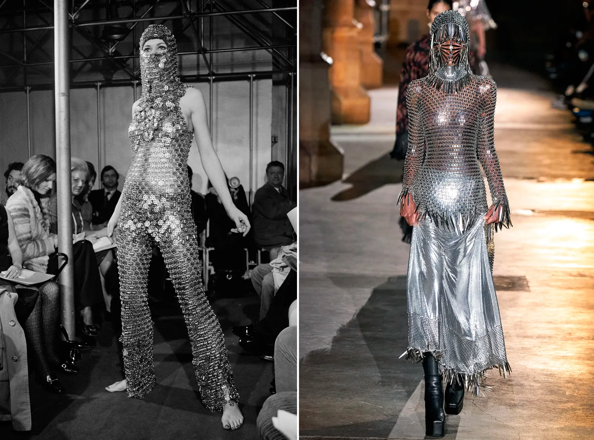

¿Hacia dónde va la moda futurista?
POR NURIA LUIS PARA VOGUE SPAIN (fragmento)
Un repaso de los diseños más punteros para darnos cuenta de que, en esencia, no hemos cambiado tanto
Además de fijar la vista en el pasado, la moda también mantiene la mirada puesta en el futuro. Entre tanta nostalgia e historicismo romántico de marcas como Erdem o Simone Rocha, otras se han caracterizado exactamente por lo contrario. Un diseño puntero, unos materiales diferentes, una forma de concebir la ropa adelantada a su tiempo. Es lo que definió, por ejemplo, a André Courrèges: “Las mujeres de hoy son arcaicas en su aspecto. Lo que quiero es ayudarles a que coincidan con su época”, declaraba en una entrevista para Life en mayo de 1965. Sus diseños formaron parte de lo que se conoció como la moda futurista de los años 60. Una visión avant-garde, pero no exclusiva: la historia del s. XX también es la de aquellos diseñadores que vieron en el futuro un terreno de posibilidades infinitas. La cuestión es, ¿hacia dónde apunta la vertiente, a priori más innovadora, de la industria?
Lo primero, ¿qué entendemos por moda futurista?Las ansias del mañana en la moda también están estrechamente relacionadas con las vanguardias de principios de s. XX. Porque en realidad, la moda futurista ya podía encontrarse mucho antes que el futurismo de los años 60: partió de ese movimiento llamado precisamente futurismo, vinculado a Tomasso Marinetti. Su visión era una forma de expresión que se oponía al estilo de la burguesía de entonces, con la velocidad, el movimiento y el dinamismo en la base del diseño. En nuestra memoria escolar lo relacionamos con la literatura, e incluso con el arte. Pero también resulta intrínseco a la moda. ¿Qué otro movimiento publicó no uno, sino cinco manifiestos, en torno a cómo debía concebirse la ropa? Giacomo Balla fue uno de los encargados de traducir los ideales futuristas de Marinetti a la vestimenta, aunque fue Vincenzo Fanni, bajo el seudónimo de Volt, el que daría alas a la ropa futurista femenina en su manifiesto de 1920. Sorprende (y mucho) los paralelismos que pueden trazarse con la idea que tenemos de moda futurista cuando leemos sus preceptos: “La moda femenina nunca puede ser lo suficientemente extravagante. [...] Vestidos que provocan sorpresas y transformaciones, equipados con resortes, aguijones, lentes de cámara, corrientes eléctricas, reflectores, aerosoles perfumados, fuegos artificiales, preparaciones químicas y miles de artilugios [...] En la mujer podemos idealizar las conquistas más fascinantes de la vida moderna. Transformaremos a la dama elegante en un verdadero complejo tridimensional vivo”. Esto se escribió hace un siglo, y más allá de sus ideales, esa constante de innovación y de creación que defendían los futuristas sigue estando presente. Aunque tenemos los vestidos simultáneos de Sonia Delaunay y los monos TuTa de Thayaht, su visión utópica se restringiría a eso, una teoría. No sería hasta los años 60 cuando los diseñadores harían de la experimentación un punto de partida para definir otra utopía, la vida en el espacio, cuya fascinación en realidad no ha cambiado tanto con los años.(...)
Los viajes intergalácticos son uno de los puntos omnipresentes del diseño futurista. Al menos, el que definió los años 60. Tras el lanzamiento del Sputnik en 1957, el mundo se obsesionó con el espacio, y comenzó una carrera, en plena Guerra Fría, por ver quién era el primero en poner al hombre en la luna. En 1965 a Courrèges se le definió como “el señor de las damas del espacio”, en una moda de minivestidos, botas altas futuristas y cascos que también anticipó Pierre Cardin con sus Cosmo Girls. Las referencias estelares no dejaban de sucederse. Cecil Beaton definía a Cardin como un miembro de la escuela marciana: “Sus jóvenes modelos están equipadas para cualquier actividad de ciencia ficción [...]. Están en la vanguardia de quienes exploran el espacio exterior”. El traje de astronauta que el propio Cardin se enfundó era el epítome de una visión que también compartieron otros diseñadores como Galanos, Rudi Gernreich o Paco Rabanne con sus vestidos metalizados. En aquella época, incluso Emilio Pucci colaboró en el diseño del parche de la misión del Apollo 15.
Pero incluir a la NASA como parte del moodboard no se limitó a la carrera espacial de los 60. Podríamos hablar de los estampados 3D que usó Stephen Sprouse para su otoño de 1999 con las fotos de Marte que tomó el robot Pathfinder. O la colaboración de Heron Preston con la agencia espacial en 2018, con motivo de su 60 aniversario. Un año antes, Chanel había convertido el Grand Palais en una pseudo estación en la que hasta los bolsos eran cohetes. En otoño de 2018, los tejidos iridiscentes y plateados, que sustituyeron al puntero blanco de los sesenta, tiñeron las propuestas de Balmain, Margiela, Sies Marjan o Dior. En 2021, Balenciaga también ha incluido el traje espacial en su colección de otoño. Aunque las noticias relativas a la NASA se siguen sucediendo, desde que Space X hiciese su primer lanzamiento exitoso (2015), se ha iniciado una especie de nueva carrera espacial: los esfuerzos por llegar a Marte. Y si bien su traducción no resulta tan literal como entonces, la moda no es impermeable a todos estos referentes.
continuar lectura en Vogue Spain